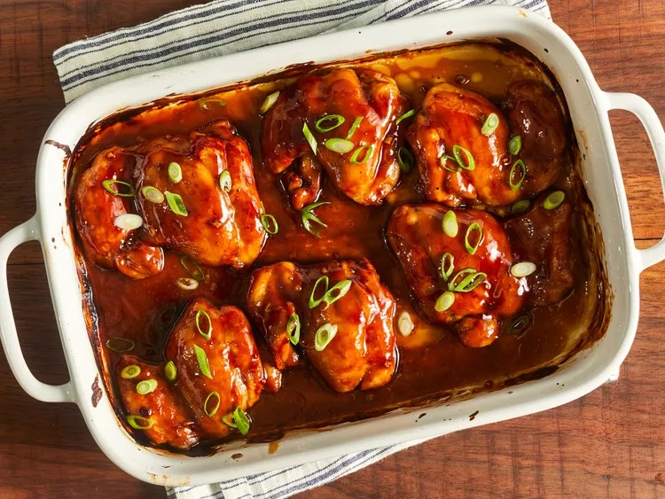

Baked Teriyaki Chicken

Description
Teriyaki chicken is simply chicken that is coated in teriyaki sauce.
The dish comes from the Japanese cooking technique called teriyaki, where meat is grilled or broiled with a soy sauce, mirin, and sugar glaze.
Ingredients
- 1/2 cup white sugar
- 1/2 cup soy sauce
- 1/4 cup cider vinegar
- 1 tablespoon cornstarch
- 1 tablespoon cold water
- 1 clove garlic
- 1/2 teaspoon ground ginger
- 1/4 teaspoon ground black pepper
- 12 boneless, skinless chicken thighs
Steps
- Preheat the oven to 425 degrees F or 220 degrees C. Lightly grease
a 9x13-inch baking dish.
- Combine sugar, soy sauce, cider vinegar, cornstarch, cold water, garlic, ginger
and pepper in a small saucepan over low heat. Simmer, stirring frequently,
untli teriyaki sauce thickens and bubbles, 3 to 5 minutes. Remove from the heat.
- Place chicken thighs in the prepared baking dish. Brush both sides of each thigh with sauce.
Reserve any extra sauce for basting.
- Bake in the preheated oven for 30 minutes.
- Flip chicken and brush with sauce. Continue to bake, basting with remaining sauce every 10 minutes,
until no longer pink and juices run clear, 20 to 30 more minutes.
- Serve hot and enjoy!